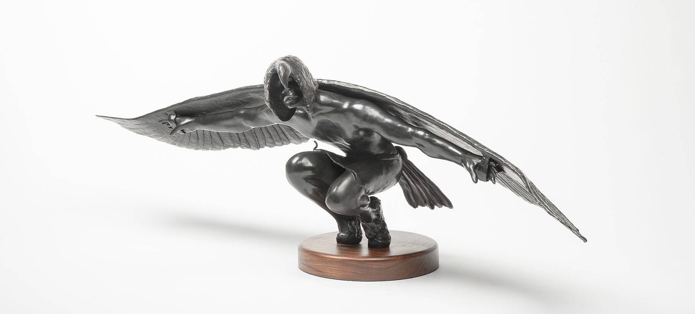

Born 1944 in Santa Clara Pueblo, New Mexico
- A member of the Tewa Native American tribe, Naranjo was blinded by a grenade
that also maimed his right hand during the Vietnam War. Afterwards, he found a passion for clay sculpture.
He has since used a variety of mediums in his work, including wax, papier-mache, bronze, and stone.
- His mother, Rose, was a potter and sparked his initial interest in scultping.
His work depicts memories from his time in the war, hunting, and other cultural and personal experiences.
- Naranjo has won numerous awards, and his work is displayed in permanent collections
in The White House and The Vatican.
-
"Being blind makes the pace of life slower; you can’t walk fast or grab for things quickly.
Life is more gentle and soft and the change brought my creative energies out." –Michael Naranjo